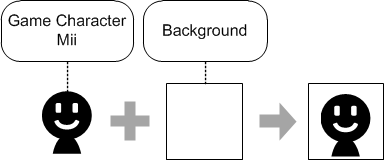

The save data and other resources amassed in the NX system for each individual person are bundled together and managed as a unit called a "user."
Up to eight users can be registered in the same NX system. When a family is sharing one NX system, each family member can register as a separate user in the system.
At least one user is guaranteed to be registered in the NX system. (When the NX is started for the first time, at least one person must register.) New users are added either inside an NX application or via the Settings menu.
The Settings menu also can be used to unregister users. When a user is unregistered, all of the save data and other resources that belong to that user are deleted.
When a user is registered to the NX system, a nickname and an icon are set for the user profile. This information is publicly available to other people playing with the user on the NX or online. The profile information can be changed at a any time.

CONFIDENTIAL